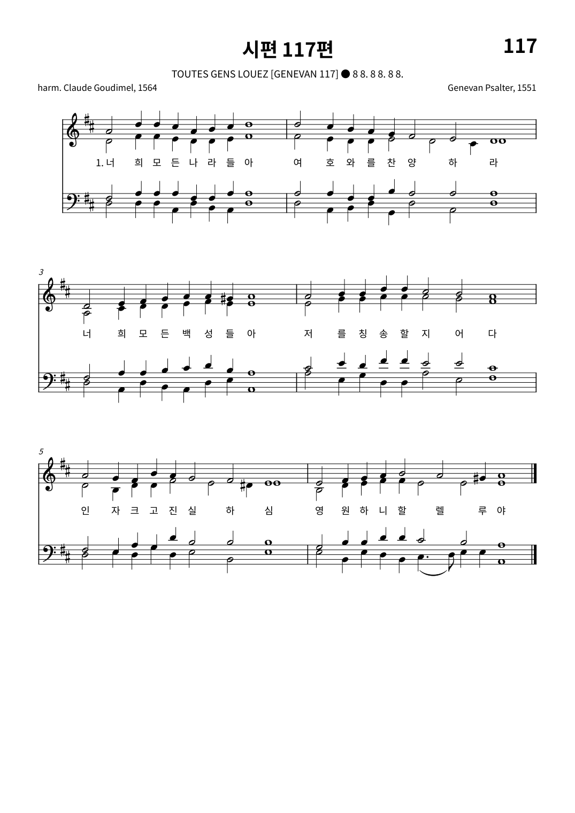

시편 117편
TOUTES GENS LOUEZ [GENEVAN 117] · 8 8. 8 8. 8 8.
곡조: Genevan Psalter, 1551 · 화성: Claude Goudimel, 1564 · 가사: 개역한글판 시편 117편 편역(AI 초벌 편역판 · 신학 감수 전) · 1절
악보 PDF MusicXML(출력용) MusicXML(반주용, 전주·반복 포함) 개역한글 시편 117편 읽기
악보

가사
1절
너희 모든 나라들아
여호와를 찬양하라
너희 모든 백성들아
저를 칭송할지어다
인자 크고 진실하심
영원하니 할렐루야
너희 모든 나라들아
여호와를 찬양하라
너희 모든 백성들아
저를 칭송할지어다
인자 크고 진실하심
영원하니 할렐루야